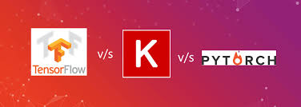

主流深度学习框架
- PyTorch是Facebook 基于原有的Torch 框架推出的采用Python 作为主要开发语言的深度学习框架。PyTorch 借鉴了Chainer 的设计风格，采用命令式编程，使得搭建网络和调试网络非常方便。尽管PyTorch 在2017 年才发布，但是由于精良紧凑的接口设计，PyTorch 在学术界获得了广泛好评。在PyTorch 1.0 版本后，原来的PyTorch 与Caffe2进行了合并，弥补了PyTorch 在工业部署方面的不足。总的来说，PyTorch 是一个非常优秀的深度学习框架。
- Keras 是一个基于Theano 和TensorFlow 等框架提供的底层运算而实现的高层框架，提供了大量方便快速训练，测试的高层接口，对于常见应用来说，使用Keras 开发效率非常高。但是由于没有底层实现，需要对底层框架进行抽象，运行效率不高，灵活性一般。
- TensorFlow 是Google 于2015 年发布的深度学习框架，最初版本只支持符号式编程。得益于发布时间较早，以及Google 在深度学习领域的影响力，TensorFlow 很快成为最流行的深度学习框架。但是由于TensorFlow 接口设计频繁变动，功能设计重复冗余，符号式编程开发和调试非常困难等问题，TensorFlow 1.x 版本一度被业界诟病。2019年，Google 推出TensorFlow 2 正式版本，将以动态图优先模式运行，从而能够避免
TensorFlow 1.x 版本的诸多缺陷，已获得业界的广泛认可。
Tensorflow V.S. PyTorch
目前来看，TensorFlow 和PyTorch 框架是业界使用最为广泛的两个深度学习框架，TensorFlow 在工业界拥有完备的解决方案和用户基础，PyTorch 得益于其精简灵活的接口设计，可以快速设计调试网络模型，在学术界获得好评如潮。TensorFlow 2 发布后，弥补了TensorFlow 在上手难度方面的不足，使得用户可以既能轻松上手TensorFlow 框架，又能无缝部署网络模型至工业系统。这里特别介绍TensorFlow 与Keras 之间的联系与区别。Keras 可以理解为一套高层API 的设计规范，Keras 本身对这套规范有官方的实现，在TensorFlow 中也实现了这套规范，称为tf.keras 模块，并且tf.keras 将作为TensorFlow 2 版本的唯一高层接口，避免出现接口重复冗余的问题。如无特别说明，后文中Keras 均指代tf.keras。
Tensorflow1.X V.S. Tensorflow2.X
TensorFlow 2 是一个与TensorFlow 1.x 使用体验完全不同的框架，TensorFlow 2 不兼容TensorFlow 1.x 的代码，同时在编程风格、函数接口设计等上也大相径庭，TensorFlow 1.x的代码需要依赖人工的方式迁移，自动化迁移方式并不靠谱。Google 即将停止支持TensorFlow 1.x，不建议学习TensorFlow 1.x 版本。TensorFlow 2 支持动态图优先模式，在计算时可以同时获得计算图与数值结果，可以代码中调试实时打印数据，搭建网络也像搭积木一样，层层堆叠，非常符合软件开发思维。
以简单的2.0 + 4.0的相加运算为例，在TensorFlow 1.x 中，首先创建计算图：
1 | import tensorflow as tf |
创建计算图的过程就类比通过符号建立公式𝑐 = 𝑎 + 𝑏的过程，仅仅是记录了公式的计算步骤，并没有实际计算公式的数值结果，需要通过运行公式的输出端子𝑐，并赋值𝑎 =2.0, 𝑏 = 4.0才能获得𝑐的数值结果。可以看到，在TensorFlow 中完成简单的2.0 + 4.0尚且如此繁琐，更别说创建复杂的神经网络算法有多艰难，这种先创建计算图后运行的编程方式叫做符号式编程。
接下来我们使用TensorFlow 2 来完成2.0 + 4.0运算：
1 | import tensorflow as tf |
输出结果是c= tf.Tensor(6.0, shape=(), dtype=float32)
(同样的代码，用tensorflow1.X运行，输出结果是c= Tensor("add:0", shape=(), dtype=float32))
这种运算时同时创建计算图𝑎 + 𝑏和计算数值结果2.0 + 4.0的方式叫做命令式编程，也称为动态图优先模式。TensorFlow 2 和PyTorch 都是采用动态图(优先)模式开发，调试方便，所见即所得。一般来说，动态图模型开发效率高，但是运行效率可能不如静态图模式，TensorFlow 2 也支持通过tf.function 将动态图优先模式的代码转化为静态图模式，实现开发和运行效率双赢。
框架核心功能
深度学习的核心是算法的设计思想，深度学习框架只是我们实现算法的工具。下面我们将演示TensorFlow 深度学习框架的3 大核心功能，从而帮助我们理解框架在算法设计中扮演的角色。
- 加速计算：神经网络本质上由大量的矩阵相乘，矩阵相加等基本数学运算构成，TensorFlow 的重要功能就是利用GPU 方便地实现并行计算加速功能。
- 自动梯度：在使用 TensorFlow 构建前向计算过程的时候，除了能够获得数值结果，TensorFlow 还会自动构建计算图，通过TensorFlow 提供的自动求导的功能，可以不需要手动推导，即可计算出输出对网络的偏导数。
- 常用神经网络接口：TensorFlow 除了提供底层的矩阵相乘，相加等运算函数，还内建了常用网络运算函数，常用网络层，网络训练，网络保存与加载，网络部署等一系列深度学习系统的便捷功能。使用TensorFlow 开发网络，可以方便地利用这些功能完成常用业务流程，高效稳定。
安装环境
https://zhuanlan.zhihu.com/p/84940320
测试环境
1 | import tensorflow as tf |